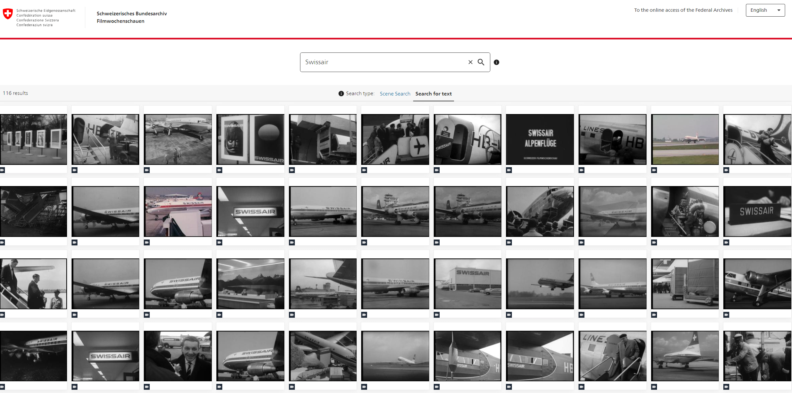

Multimodal UI for Video Retrieval at the Swiss Federal Archives
![]()
The Swiss Federal Archives (SFA) is responsible for the archiving of the administrative records of the federal authorities, in particular the government, the parliament and the administration. Access to and the consultation of records by researchers and the public is a cornerstone of its legal mandate. In order to meet the current and future access requirements, the SFA is pursuing a strategy of consistent digital transformation aimed at facilitating access to archival information for users. The advent of digital technology and artificial intelligence (AI) has revolutionised methods and tools in this context. For several years, the SFA has been combining AI methods and their application to historical sources, such as the use of Automated Handwritten Text Recognition (AHTR) on the website Minutes of the Federal Council (1848-1972). In 2022, the SFA decided to implement Archipanion, a service provided by 4eyes and implemented on top of vitrivr, a content-based multimedia information retrieval system, to improve access to its digital film collection “Filmwochenschau (1940-1975)”. Formerly indexed using standard methods without direct content exploitation, the collection is now easily searchable through AI-driven, content-based processing. This technological advancement provides both users and scholars with unprecedented access to over 1,651 editions, facilitating research and exploration anytime and anywhere.
Content-based Retrieval, Digital Archives, Machine Learning
Introduction
Access to archival records has been an integral part of the mission of the Swiss Federal Archives (SFA)1 since the founding of the Helvetic Republic in 1798, and represents a commitment to preserving and providing access to the administrative records of federal authorities such as the government, parliament and the administration. As custodian of Switzerland’s historical documentation, the SFA plays a vital role in facilitating access to these records for researchers and the public. In response to the constant evolution of digital technologies and the emergence of artificial intelligence (AI), the SFA has adopted innovative approaches to improve the accessibility and usability of its extensive holdings.
One significant advancement is the application of Automated Handwritten Text Recognition (AHTR) on the website housing the Minutes of the Federal Council (1848-1972)2 (Hodel et al. 2021). This initiative exemplifies the SFA’s commitment to leveraging AI to improve access and searchability of historical documents, enabling researchers to explore and analyse these crucial records more efficiently. Moreover, the SFA has collaborated with the Linguistic Research Infrastructure (LiRI) of the University of Zurich on a natural language processing (NLP)-based anonymiser for archival metadata3. This collaboration underscores the SFA’s proactive approach to improving privacy measures while facilitating broader access and use of records.
Similar efforts in other archives have demonstrated the efficacy of Machine Learning (ML), Linked Open Data (LOD), and community-led application programming interfaces (APIs) like the International Image Interoperability Framework (IIIF) in enhancing archival accessibility and research capabilities. LOD facilitates the interconnectedness of datasets, allowing seamless integration and discovery across archival collections. Meanwhile, IIIF standardises the delivery of image-based content, enabling sophisticated visual analysis and comparison of digital objects (Cornut, Raemy, and Spiess 2023).
In 2022, the SFA furthered its digital transformation efforts by implementing Archipanion, powered by vitrivr, a sophisticated content-based multimedia information retrieval system (Spiess and Stauffiger 2023). This strategic decision aims to revolutionise access to the SFA’s digital film collection, “Filmwochenschau (1940-1975)”. By integrating AI-driven technologies, Archipanion enhances the discoverability of over 200 hours of historical videos, previously indexed using traditional methods.
The structure of this paper begins with an overview of the Schweizer Filmwochenschau and the rationale behind digitising and improving access to this collection through AI technologies. The technological framework of vitrivr and Archipanion is then described, their capabilities and the integration process at the SFA. It then examines the implications of AI for archival research, focusing on the opportunities and challenges presented by predictive capabilities and the need for rigorous validation. Finally, it concludes with perspectives on ongoing efforts at the SFA to optimise AI tools, emphasising improved access to archival materials. This initiative extends beyond the GLAM (Galleries, Libraries, Archives, and Museums) sector to encompass methodological approaches that cater to the needs of Digital Humanities (DH) and Data Science practitioners.
Schweizer Filmwochenschau
The Schweizer Filmwochenschau was shown every week in the supporting programme of Swiss cinemas between 1940 and 1975 in the three national languages German, French and Italian. The programmes were commissioned by the Federal Council and featured news from the worlds of politics, culture, social and sport. In 2015, the Swiss Film Archive (Cinémathèque suisse)4, Memoriav5 and the SFA made the films available in the three languages as part of a joint project6. The digitisation made it possible to preserve analogue films consisting of 35mm nitrate and acetate elements, positives and negatives in digital formats, as well as to provide a new access. The digitised film collection J2.143*#20 with 1,651 editions and a total running time of approximately 200 hours is part of the Federal Archives’ online access platform7. Depending on their access authorisation, users can search for a variety of metatada and primary data according to their access authorisation or download the films directly via video streaming. Like all other formats, this film collection is described according to the International Standard Archival Description and indexed down to document level in the archive tree.
Given the rapidly growing volume of analogue and digital born archival content8, in-depth exploration and indexing conducted solely by humans is hardly conceivable for the SFA. In this context, the SFA see automation and AI as resource-efficient ways of complementing traditional archiving work and offering innovative services to users. The new Archipanion Filmwochenschau platform9 extends the conventional search methods to include content-based discovery in the Schweizer Filmwochenschau. Archipanion is a service provided by 4eyes GmbH10 and is implemented on top of vitrivr11 (Sauter et al. 2024).
The deployment of vitrivr and Archipanion
Vitrivr is an open-source retrieval stack that supports multiple query modes for searching multimedia collections (Rossetto et al. 2016). It has been developed by the Database and Information Systems Group (DBIS) at the University of Basel, which notably carries out research in the field of multimedia information retrieval. The system enables the automated search and access to multimedia data by combining various ML techniques to analyse video, image, and audio files. Unlike conventional multimedia search solutions, it is not limited to metadata browsing, but is able to search for and retrieve multimedia content based on similarity to a user’s query. It excels by leveraging “object detection method for search filtering and annotation, a co-embedding method used for content-based text-to-image and image-to-image retrieval” (Cornut, Raemy, and Spiess 2023), as well as Contrastive Language-Image Pre-Training (CLIP), a versatile model that bridges the gap between computer vision and NLP, enabling seamless search and retrieval of multimedia content based on semantic similarity.
At its core, vitrivr transforms both images and textual content into a unified semantic space, enabling efficient query processing regardless of the input type. Each query generates a unified vector in a multidimensional space where similarity metrics determine the most relevant results (Spiess et al. 2022). The effectiveness of this model depends on the quality of the training data. In particular, vitrivr uses a carefully selected dataset for its text co-embedding model, including English-only datasets such as Flickr30k (31,000 images of everyday scenes with captions), Microsoft COCO (over one million images focused on object recognition), MSRVTT (10,000 video clips with linguistic annotations linking video content to words), TextCaps and TGIF (specialising in understanding complex captions and animated GIFs), VaTeX (41,250 multilingual video clips enhancing the language capabilities of our AI) and ImageNet (categorising around 50 million images based on the hierarchical structure provided by WordNet). The pretrained visual and textual feature encoders remain fixed, significantly reducing the required training resources. During training, only the visual and textual embedding networks were trained on a mixture of captioned video and image datasets. These datasets ensure the model’s training is thorough and enhances retrieval accuracy (Waltenpül 2023).
Archipanion uses elements of vitrivr to revolutionise access and content-based search within multimedia content for GLAM. Its web user interface supports multiple query types in a multilingual environment (German, French, Italian and English) and automates the enhancement of search content effortlessly. Archipanion harnesses various AI technologies, including the DeepL API12, to translate queries into English because the text co-embedding model is not multilingual. This translation ensures that queries in different languages are understood and processed effectively, delivering pertinent results.
With a wide range of query modes, Archipanion facilitates scene searches by allowing users to enter descriptive queries, such as ‘a football player lying in front of the goal’, to locate relevant images from the Schweizer Filmwochenschau. Text search capabilities allow the discovery of specific content within films, such as the name of an airline (as seen in Figure 1) or a place name sign, through automatic text recognition. In addition, Archipanion supports exploration through similarity searches based on displayed images, helping users to discover previously unseen relationships within collections. Each search result offers the option to download sequences for use and re-use in different contexts, alongside a link to the object in the online archival arrangement.

The integration of vitrivr and Archipanion has significantly improved accessibility to the Filmwochenschau archive. Previously indexed using conventional methods with limited content utilisation, the collection is now effortlessly searchable through AI-driven, content-based processing. This technological advancement converts digitised information into actionable knowledge, providing historians and humanities researchers unprecedented access to this collection, facilitating research and exploration anytime, anywhere.
Perspectives
AI introduces both opportunities and challenges in research. Archipanion, specialised in content-based multimedia retrieval, exemplifies this transformation. It empowers researchers by automatically sifting through vast datasets, extracting specific content details, and uncovering connections that would be difficult or impractical for human analysis alone. However, the outcomes of these AI models provide a simplified representation of reality, enabling understanding of complex relationships and predictive capabilities within the multidimensional vector space.
Despite the transformative promise of predictive capabilities in AI, their effectiveness depends on fundamental factors such as the quality of training data, the accuracy of feature extraction methods, and the appropriateness of similarity metrics. Tools such as vitrivr have demonstrated progress in retrieval tasks, yet there remains a critical need for rigorous research to fully understand AI mechanisms and validate their practical applications. Human expertise remains essential in interpreting and contextualising AI-generated insights to ensure that query results are not only useful but also meaningful in advancing research agendas.
The integration of AI into archival research presents both innovative methodologies and potential limitations, as highlighted by Jaillant and Aske (2023). Their research underscores the importance of critical engagement with AI tools, and advocates for interdisciplinary collaboration to effectively harness the capabilities of AI while navigating its inherent biases and limitations. They argue that while AI facilitates improved access to and analysis of archival materials, including textual and visual content, its use requires ongoing scrutiny and refinement to ensure scholarly integrity and accuracy. This perspective calls for an ongoing dialogue between AI practitioners, humanities scholars, and archival professionals to optimise AI technologies.
Collaborative efforts are essential not only to refine AI applications in archival settings, but also to maximise their societal benefits and relevance. It is crucial to address various risks associated with AI, such as potential biases in algorithmic decision-making, privacy and security issues, and challenges in maintaining the long-term accessibility and usability of digital archives.
Conclusion
Ultimately, the SFA remains committed to improving the accessibility and usability of its archival collections for both users and staff. The implementation of Archipanion represents a significant leap forward in improving access to the Filmwochenschau and other digital holdings. By harnessing AI technologies, the SFA not only facilitates the exploration and retrieval of historical materials, but also provides researchers with advanced tools for in-depth analysis and discovery. Looking ahead, the SFA continues to explore innovative ways to enhance search capabilities and ensure that its vast archival resources remain accessible and relevant in the digital age. Collaborative efforts are essential not only to refine AI applications in archival settings but also to amplify their societal benefits and relevance, thus preserving historical records and advancing scholarly research.
References
Footnotes
Swiss Federal Archives: https://www.bar.admin.ch/↩︎
Minutes of the Federal Council (1848-1972): https://www.chgov.bar.admin.ch/↩︎
tcc-metadata-anonymization: https://github.com/SwissFederalArchives/tcc-metadata-anonymization↩︎
National Film Archive: https://www.cinematheque.ch/↩︎
Memoriav: https://memoriav.ch↩︎
Filmbestand Schweizer Filmwochenschau (1940-1975): https://memoriav.ch/de/projects/schweizer-filmwochenschau-1940-1975/↩︎
Schweizer Filmwochenschau, 1940-1975 (Series): https://www.recherche.bar.admin.ch/recherche/link/en/archive/unit/21677483↩︎
Swiss Federal Archives’ facts and figures: https://www.bar.admin.ch/bar/en/home/about-us/the-federal-archives/facts-and-figures.html↩︎
Schweizerisches Bundesarchiv Filmwochenschauen: https://wochenschau.archipanion.com/↩︎
4eyes: https://www.4eyes.ch/↩︎
vitrivr: https://vitrivr.org/↩︎
DeepL API: https://developers.deepl.com/docs↩︎